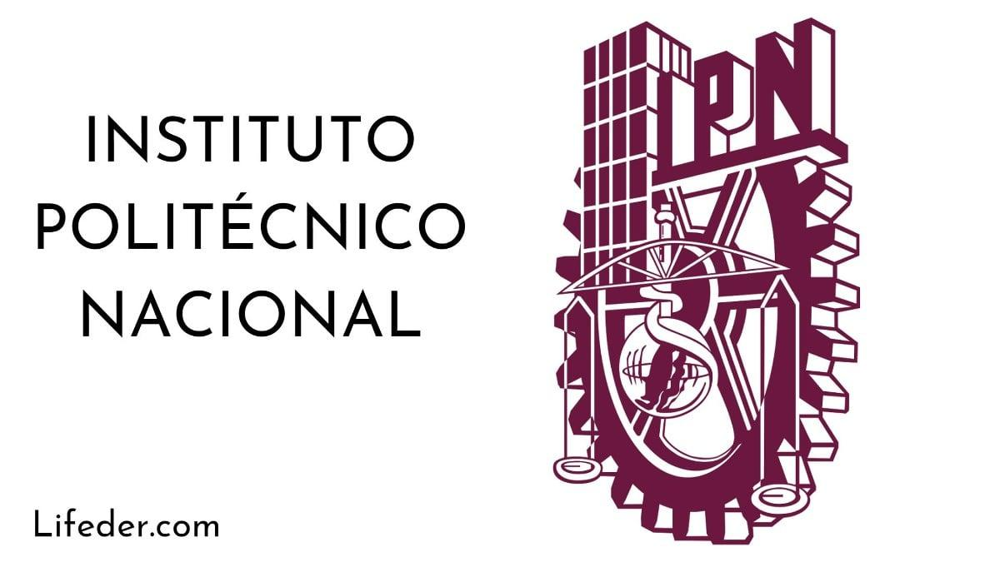

Esta pagina web tiene como objetivo buscar el interes en los jovenes sobre lo que significa estar en el Instituto Politecnico Nacional y como se pude dignificar y poder tener "IDENTIDAD POLITECNICA" de esto se trata la paguina web de como contruir nuestra identidad politecnica y lleavarla acabo diariamente como dentro de las instituciones como afuera y poder decir orgullosamente que pertenecemos a una grande institucion como lo es el Instituto Politecnico Nacional
La identidad politécnica se refiere a la cultura, los valores y las tradiciones asociadas con las instituciones educativas politécnicas, como los institutos tecnológicos o las universidades politécnicas. Estos establecimientos suelen enfocarse en la educación técnica y profesional, combinando la teoría con la práctica para preparar a los estudiantes para carreras específicas en campos como la ingeniería, la tecnología, la administración, entre otros.
La identidad politécnica puede incluir elementos como el énfasis en la innovación, la aplicación práctica del conocimiento, la colaboración con la industria, el enfoque interdisciplinario y la promoción del desarrollo personal y profesional integral de los estudiantes. Además, puede manifestarse en símbolos, tradiciones, eventos y valores compartidos por la comunidad académica y estudiantil de estas instituciones.
Esta se pude ir contruyendo duranter el tiempo que se pertenescamos a la institucion y aun despues de egresar de las instituciones implementadola en nuestro dia a dia.
Esta se puede obtener respetando la normatividad que cada un de los planteles de la institucion nos ofrece tambien teniendo un buen lapzo academico que implica segui siendo un alumno regular ya que seo representa que de verdad quieres estar en donde estas actualmente.
